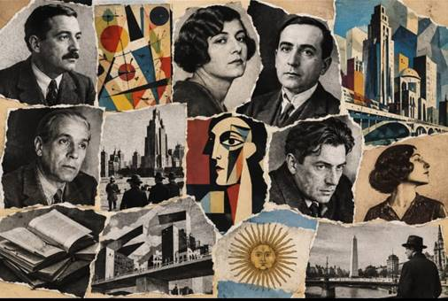
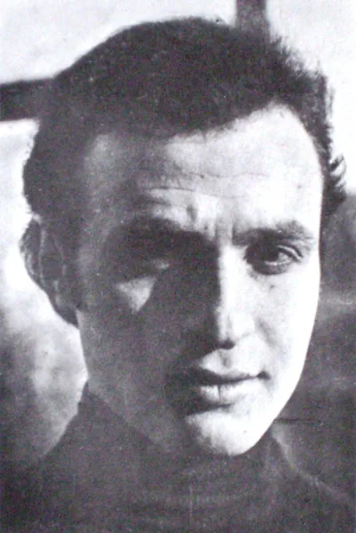
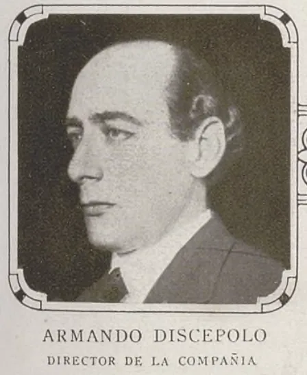
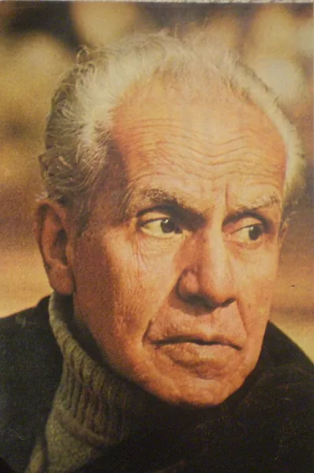

Contexto histórico de Argentina (1920–1930)
Durante los años veinte, las ciudades argentinas crecieron y cambiaron con la inmigración, el transporte, los diarios y los nuevos espacios culturales. Esa modernización convivió con desigualdades y conflictos sociales.
Escritores y artistas buscaron nuevas formas de expresión, en diálogo con las vanguardias internacionales y con la vida del país. Las revistas difundieron esas ideas. La crisis de 1929 y el golpe de Estado de 1930 cerraron la década en un clima de inestabilidad.
Línea de tiempo
1921: Borges regresa a Buenos Aires y participa en la difusión del ultraísmo. Aparece la revista mural Prisma.
1922: Girondo publica Veinte poemas para ser leídos en el tranvía y comienza Proa. 1923: Borges publica Fervor de Buenos Aires; se estrena Mateo, de Discépolo.
1924: comienza Martín Fierro. Pettoruti expone en Witcomb y Xul Solar regresa al país.
1927: finaliza Martín Fierro, una de las publicaciones centrales de la renovación cultural argentina.
1929: se funda el Grupo Renovación para impulsar nuevas propuestas musicales. La crisis económica mundial afecta al país.
1930: el golpe de Estado encabezado por Uriburu derroca a Hipólito Yrigoyen.
Artistas y referentes
participó en el ultraísmo y en proyectos editoriales de vanguardia. En Fervor de Buenos Aires (1923) exploró poéticamente la ciudad, sus barrios y sus paisajes.

trabajó con formas geométricas y nuevas relaciones entre luz, color y espacio. Su exposición de 1924 cuestionó las expectativas del público acostumbrado a una pintura más naturalista.

desarrolló el grotesco criollo, que combina situaciones cómicas y dolorosas para representar conflictos familiares y sociales. Mateo (1923) muestra las dificultades de un trabajador ante los cambios de la ciudad.

fue uno de los integrantes fundadores del Grupo Renovación en 1929. Impulsó la circulación de nuevas composiciones y el intercambio con la música contemporánea.
Grupo Florida
Florida fue un agrupamiento informal de escritores y artistas relacionado con la renovación estética y con la revista Martín Fierro. Sus participantes valoraban la experimentación, el humor y el contacto con las nuevas corrientes internacionales. Borges y Girondo estuvieron vinculados con este ambiente. La polémica con Boedo puso en discusión la relación entre arte y sociedad: Boedo daba mayor protagonismo a los problemas sociales, aunque las diferencias entre ambos grupos no fueron absolutas.
Revista Martín Fierro
Publicada entre 1924 y 1927, Martín Fierro fue un espacio central para difundir literatura, artes visuales y debates culturales. Reunió textos, ilustraciones y opiniones que cuestionaban las formas establecidas. Su importancia radica en haber conectado distintas disciplinas y ayudado a construir un público para el arte nuevo. La discusión sobre la exposición de Pettoruti permite reconocer ese clima de renovación.
Ultraísmo
El ultraísmo buscaba una poesía concentrada en imágenes y metáforas, con menos adornos y explicaciones. Borges participó en su difusión en Argentina después de su experiencia en España. Prisma fue uno de sus espacios de circulación. Una característica reconocible es la asociación inesperada entre elementos: la ciudad, el transporte o la luz pueden convertirse en imágenes poéticas que modifican nuestra manera de observar lo cotidiano.
Arte moderno en Argentina
La renovación visual argentina tuvo caminos diversos. Pettoruti exploró la organización geométrica de las formas; Xul Solar creó universos simbólicos; Norah Borges vinculó la gráfica con la literatura. Estos artistas ampliaron las posibilidades de representar y de imaginar, más allá de reproducir fielmente lo visible. La exposición de Pettoruti de 1924 ejemplifica cómo una propuesta nueva podía provocar rechazo, curiosidad y discusión pública.